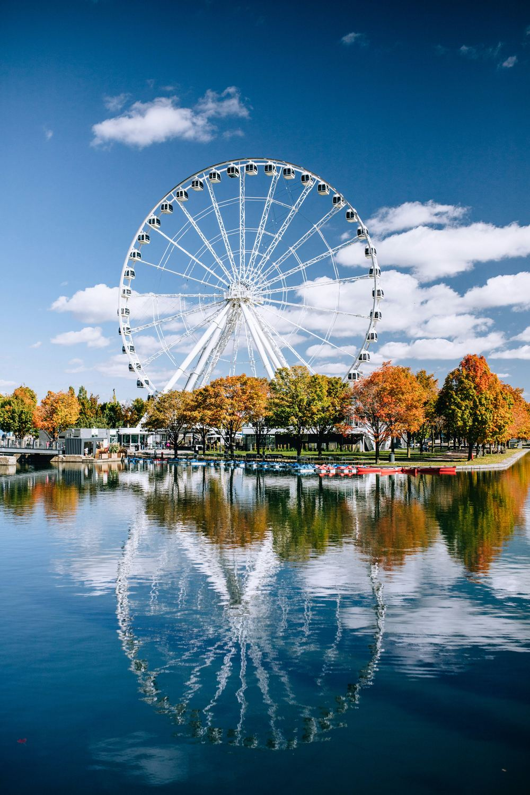
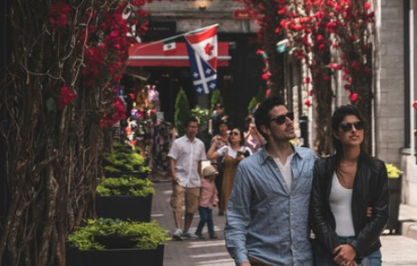
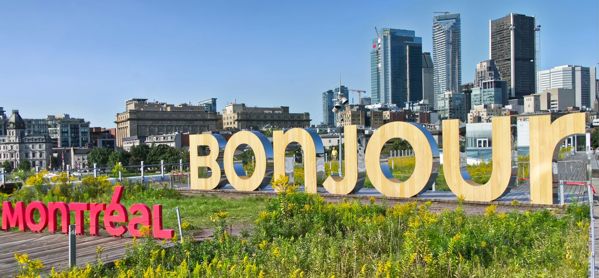
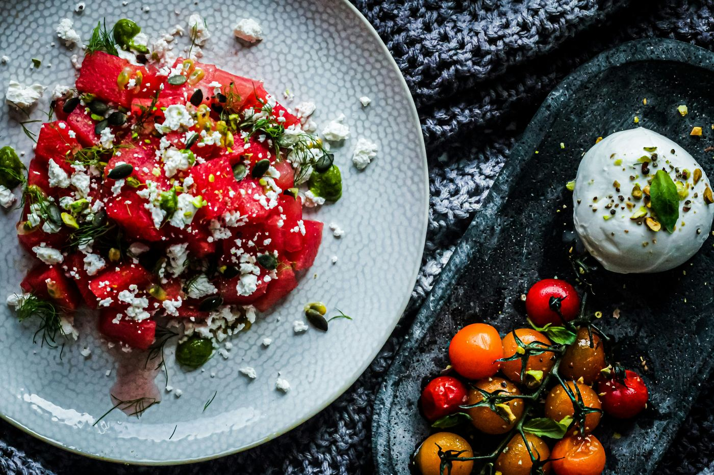
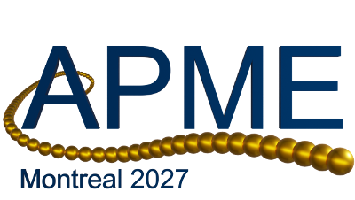
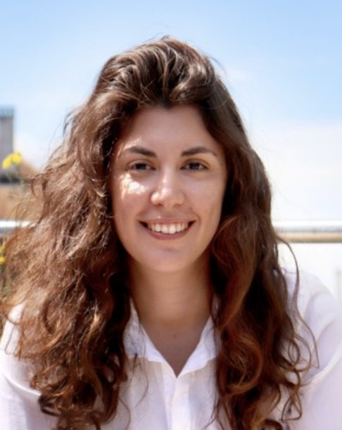
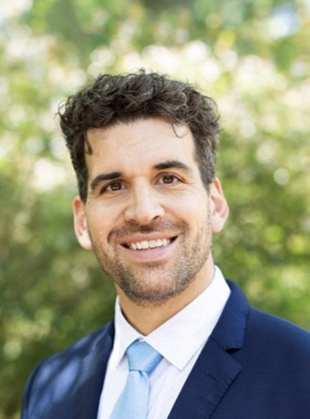

Advanced Polymers via Macromolecular Engineering Conference (APME) 2027




Save the Date!

May 10-14, 2027,
Montreal, Canada
Co-Organizers
Prof. Michael CunninghamQueen’s University
Prof. Milan MarićMcGill University
Prof. Benoît LessardUniversity of Ottawa
~ Plenary Speakers ~
-

Prof. Athina Anastasaki,
Prof. Athina Anastasaki Biography
ETH Zurich, Switzerland -

Prof. Todd Hoare,
Prof. Todd Hoare Biography
McMaster University, Canada -

Prof. Frank Leibfarth,
Prof. Frank Leibfarth Biography
University of North Carolina, USA -
Prof. Rongrong Hu,
Prof. Rongrong Hu Biography
South China University of Technology, China
Invited Speakers
- Prof. Mathias Destarac University of Toulouse
- Dr. Stuart Thickett School of Natural Sciences (Chemistry)/University of Tasmania
- Prof. Masami Kamigaito Graduate School of Engineering, Nagoya University, Japan
- Prof. Sébastien Perrier Department of Chemistry, University of Warwick, UK; Monash University, Australia
- Prof. John B. Matson Virginia Tech
- Prof. Sébastien Lecommandoux Université de Bordeaux, Bordeaux, France
- Dr. Munmaya Mishra Encapcr, LLC, Virginia
- Dr. Simon Harrisson Université de Bordeaux
- Prof. Bert Klumperman Stellenbosch University
- Prof. Zachary Hudson University of British Columbia
- Prof. Dominik Konkolewicz Miami University
- Dr. Julien Nicolas Université Paris-Saclay
- Prof. Harm-Anton Klok École Polytechnique Fédérale de Lausanne
- Prof. Jutta Rieger Sorbonne Université
- Prof. Edmondo Benetti University of Padova
- Prof. Takaya Terashima Osaka University
- Prof. Shigeru Yamago Kyoto University
- Prof. Marc Hillmyer Minnesota University
- Prof. Eva Harth University of Houston
- Prof. Steve Armes University of Sheffield
- Prof. Nikos Hadjichristidis King Abdullah University of Science and Technology
- Prof. Brigitte Voit Leibniz Institute of Polymer Research Dresden
- Prof. David Haddleton University of Warwick
- Prof. Jean-Marie Raquez University of Mons/Head of the laboratory of Polymeric and Composite Materials
- Prof. Christine Luscombe Okinawa Institute of Science and Technology
- Prof. Stuart Rowan University of Chicago
- Prof. Brett Fors Cornell University
- Prof. Christopher Barner-Kowollik Queensland University of Technology / Karlsruhe Institute of Technology
- Prof. Muriel Lansalot Université Claude Bernard Lyon 1, France
- Prof. José Bonilla-Cruz Centro de Investigacion en Materiales Avanzados, Mexico
- Prof. Franck D’Agosto Université Claude Bernard Lyon 1, France
- Prof. Emily Pentzer Texas A&M University, USA
- Prof. Makoto Ouchi Kyoto University, Japan
- Prof. Remzi Becer University of Warwick, UK
- Prof. Martina Stenzel University of New South Wales, Australia
- Prof. Brent Sumerlin University of Florida, USA
- Prof. Rigaberto Advincula Oak Ridge National Laboratory/University of Tennessee,
- Dr. Elodie Bourgeat-Lami University Claude Bernard Lyon 1
- Prof. Tanja Junkers Monash University, Australia